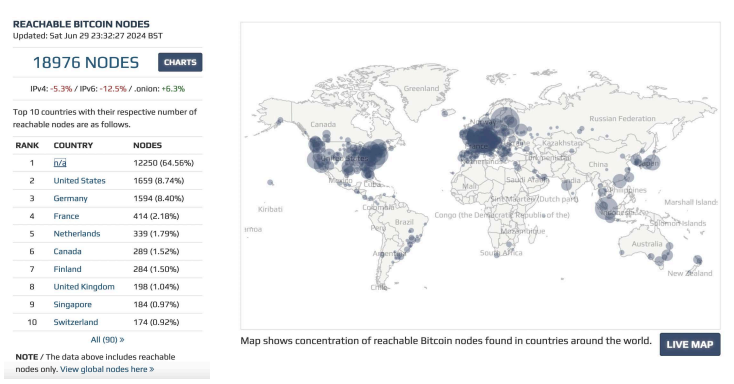

Şimdiye Kadar Yazılmış En Basit Bitcoin Kitabı
P2P AĞI
Bu, çoğunluğun onayıyla veritabanına eklemeler yapılan küresel
bir dağıtık veritabanıdır...
~ Satoshi Nakamoto 2009-02-18

Küresel erişilebilir Bitcoin Düğümlerinin dağılımı, Haziran 2024
Sonuç, tek-arıza-noktası olmayan dağıtık bir sistemdir.
Kullanıcılar kendi paralarının kripto anahtarlarını ellerinde
tutarlar ve birbirleriyle doğrudan işlem yaparlar, P2P ağı çifte
harcamayı kontrol etmede yardımcı olur.
~ Satoshi Nakamoto 2009-02-11